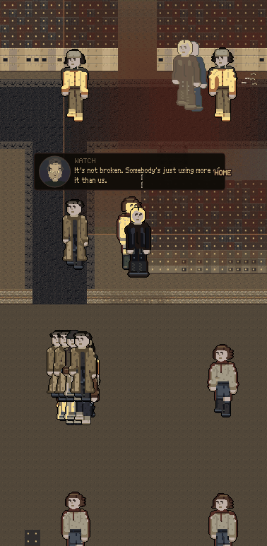
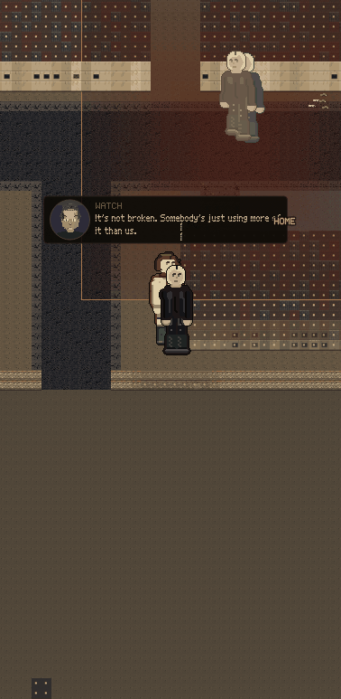
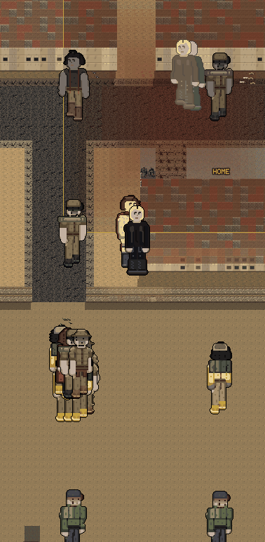
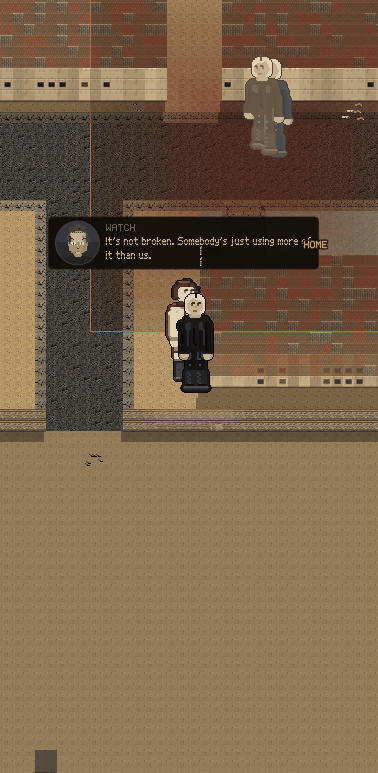
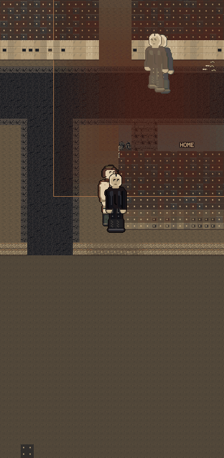

Every picture here is the real game, shot off the glass. Nothing is drawn by hand.DRAFT
At ten in the morning your valley has 41 people outside.
At eight at night it has 4.
Your street draws 23 and 24.
The world underneath already has a whole day in it. People leave in the morning, come back at lunch, go out again at five, and by eight almost everybody is inside. The screen never finds out. It puts the same crowd on your street at breakfast and at bedtime.


Same street, same second, same everything else. The only difference is whether the game borrows people onto your block or lets the hour be the hour.


This is why the borrowing was built and it was the right call at the time. The busiest hour of the day puts two people in front of you. Nobody is arguing for the right-hand picture at ten in the morning.

So the night already works. It is the evening that lies.
| HOUR | OUTSIDE IN THE WORLD | DRAWN ON YOUR STREET | ||
|---|---|---|---|---|
| 3am | 0 | 3 | ||
| 7am | 10 | 24 | ||
| 10am | 41 | 23 | ||
| 1pm | 3 | 20 | ||
| 5pm | 40 | 23 | ||
| 8pm | 4 | 24 | ||
| 11pm | 2 | 15 |
The gold moves. The blue does not. That is the whole problem in one picture: your city has a rhythm and your screen is flat.
Nothing on this page has been built. The pictures are the game as it stands right now, and the count is its own schedule, read hour by hour.